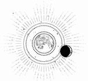

CAPÍTULO 53
Abrilis 1787
Una vez recuperada la lucidez, la quimera de Kaine se le antojó aún más grande. Cuando Helena terminó de vestirse y estuvo ya lista para marcharse, en vez de volver a la ciudad de forma discreta, Kaine la llevó a la azotea. Allí estaba la criatura, estirándose y bostezando, dejando a la vista unos colmillos más largos que los dedos de Helena. Las alas se desplegaban de tal modo que ocupaban casi toda la superficie de la azotea.
La quimera fue hasta Kaine al trote y abrió sus escalofriantes ojos amarillentos para observar a Helena; torció el hocico en señal de advertencia.
—Amaris, pórtate bien —la reprendió Kaine al tiempo que le rascaba por detrás de las orejas.
Amaris dejó caer la cabeza, pero siguió enseñando las encías sin apartar la vista de Helena. Fue una bendición que la noche anterior Helena hubiera estado delirando; jamás se habría atrevido a montarse sobre esa criatura de haber sabido que era real.
Kaine acarició al monstruo lobuno y después se arrodilló para masajearle la pata delantera. La chica vio que tenía patas de caballo, pero acababan en unas garras enormes.
Helena dio un paso hacia atrás para darle más espacio. A pesar de que Kaine quería que se hiciesen amigas, era evidente que a Amaris no le caía bien nadie salvo su dueño.
—No está gruñendo por ti —le explicó Kaine antes de que Helena retrocediera un poco más—. Bennet ensambló mal las patas cuando la creó. Cuando crece, se le estiran los nervios y tengo que arreglarlos.
—¿A qué te refieres? —Helena lo observó con atención. Se percató de que estaba usando la resonancia mientras le masajeaba la pata delantera.
—A Bennet solo le interesa la parte estética de las quimeras. Une piezas a la fuerza, sin importarle la funcionalidad. Las quimeras son tan peligrosas porque están rabiando de dolor. Mueren del estrés que sufren. Cuando me dieron a Amaris, me mordió unas cincuenta veces la primera semana. Tal vez recuerdes que por aquel entonces todavía tenía la espalda destrozada. Estuve a punto de partirle el cuello al décimo mordisco, pero pensé: «A mí me duele también tanto que me encantaría morder a alguien. ¿Por qué no va a hacer ella lo mismo?». Por entonces era un cachorro, pero parecía un potro. Se tropezaba y se rompía las alas una y otra vez. —Volvió la vista hacia Helena—. Para entonces ya había aprendido la contención del alivio del dolor, y tú me habías comentado los numerosos defectos que tenían las transmutaciones, así que intenté arreglar todo lo que pude. Cuando Amaris comprendió que no iba a hacerle daño, dejó de morderme.
Se enderezó y acarició a la quimera por debajo de un ala enorme. Las plumas eran del tamaño del brazo de Helena. Kaine frotó los nudillos entre los ojos de Amaris.
—Y, después, me fue cogiendo cariño. Es la única superviviente de toda su camada. Bennet quiso que se la devolviera para ver por qué había salido bien. Estuvo a punto de arrancarle la cabeza, ¿verdad? —Le desordenó el espeso pelaje—. Ven a conocerla, se portará bien.
Le indicó a Helena que se acercara, la cogió de la mano y dejó que Amaris la olfateara. La quimera siguió enseñando los dientes, pero empezó a mover la cola y relajó las alas. Kaine hizo que Helena enterrara los dedos en el espeso pelaje y rascara por detrás de una oreja enorme y puntiaguda.
Helena notó que Kaine no dejaba de mirarla mientras permitía que la resonancia se extendiera hacia el cuerpo de la quimera. Amaris se estremeció, pero no se movió ni gruñó.
Sintió lo mal ensamblada que estaba Amaris; tenía huesos y tejidos que no deberían estar juntos pero que estaban unidos a la fuerza. A diferencia de las quimeras que había examinado en el laboratorio, era evidente que alguien había intentado corregir los fallos más graves: coser bien los músculos, suavizar las articulaciones y los ligamentos cruzados, bloquear los nervios para que no sintiera tanto dolor…
Intentó imaginar a ese monstruo de cachorro, como un potro o un polluelo. Inocente y joven, y entonces…
Dolor y mutilación.
Por supuesto que las quimeras eran salvajes. ¿Cómo iban a soportar tanto dolor sin aprender a morder?
—Has hecho un trabajo excepcional —dijo con la boca seca—. ¿Así es como aprendiste a sanar?
—Supongo que me sirvió de práctica.
Kaine contempló la ciudad, que se extendía como una corona resplandeciente. Lumitia todavía no había salido, por lo que había franjas en la isla Este que permanecían a oscuras. Sin embargo, la Torre de Alquimia se alzaba sobre todo lo demás, con su faro siempre brillante.
—Tenemos que irnos ya. Está tan oscuro que podemos pasar desapercibidos.
Una cosa era acariciar a Amaris y otra muy distinta ir subida sobre su lomo. Helena estaba convencida de que, si quisiera, el lobo podría partirla por la mitad con los dientes. Kaine se quedó junto a la cabeza de Amaris, para rascarle detrás de las orejas, mientras Helena se agarraba al arnés de cuero y se subía a la montura.
Tardó tanto tiempo en hacerlo que empezó a darle vergüenza; era como escalar una montaña peluda. Helena temía darle un rodillazo o un codazo, así que no sabía cómo colocarse. Kaine se montó de un salto a su espalda.
Apenas se había sentado cuando Amaris saltó del tejado.
En un primer momento, se desplomaron hacia el suelo, pero entonces desplegó esas enormes alas para aprovechar una corriente de aire llevándolos hacia los cielos.
Amaris volaba tan alto que el oxígeno comenzó a escasear. Mantuvieron distancia con la ciudad y las torres, y volaron junto a las montañas hasta la presa. La quimera descendió a tal velocidad que el Reducto pasó como un borrón y las ráfagas que provocaron sus alas hicieron vibrar las ventanas del edificio. Aterrizaron en el patio de una de las fábricas.
Cuando se bajó, Helena sintió que las piernas la sostenían a duras penas y agradeció de corazón que hubiera un suelo firme bajo sus pies. Quedó convencida de que los humanos no estaban hechos para volar y que hacerlo era una abominación. Trató de parecer agradecida en vez de a punto de vomitar, pero se alejó de la quimera.
Kaine la siguió. Ahora que le había presentado a Amaris y el viaje había terminado, volvía a haber cierto brillo de resentimiento en sus ojos, como si todavía no tuviera muy claro si debía dejarla regresar al Cuartel General.
Helena fingió no darse cuenta mientras se acercaba a la cancela, pero eso solo consiguió ponerlo de peor humor. Al final se detuvo.
—¿Qué sucede?
—No te vayas —expresó en tono suave.
—Sabes que tengo que irme.
El chico negó con la cabeza.
—No, no es cierto. No les importas.
Las palabras le dolieron como si hubieran tocado un nervio. El dolor resonó por todo su cuerpo. En el pasado lo habría negado, porque tenía a Luc y él jamás le habría dado la espalda, pero ese ya no era el caso.
Sin embargo, no cedió. Negó con firmeza.
—No podemos permitir que ganen los inmarcesibles. Nos jugamos demasiado. Tengo que ir adonde sirva de algo.
La furia se sumó al resentimiento en los ojos de Kaine.
—No, no es cierto. Da igual cuántas veces te rompas, a los dioses no les importa. No habrá recompensa. Esto… —señaló con una mano la ciudad, las montañas y el firmamento negro desde el que refulgía Lumitia—, esto es el Abismo. Ya estamos dentro. Todo lo demás da igual. Al universo le importa un comino el sacrificio y el dolor.
—Te equivocas —replicó Helena.
Kaine abrió la boca para protestar, para enumerar una lista interminable de ejemplos que confirmaban que el mundo era frío y ajeno, pero ella no necesitaba oírlo.
—Te equivocas porque yo formo parte del universo —siguió—. Un trocito de nada, es cierto, tal vez insignificante en términos matemáticos, pero formo parte de igual forma. Tú y yo no somos ajenos a nada. Nadie lo es. A mí me importan las personas que han muerto y las que morirán, y también los que sufren. Me importarán mientras siga con vida. Y eso significa que a esa parte del universo le importa. —Le dedicó una sonrisa—. ¿No te parece un poco más alentador?
Parecía desolado. Aun así, Helena se encogió de hombros.
—Quiero hacer el bien en este mundo. Eso es lo que quería mi padre por encima de todo. —Se miró las manos—. Sé que la mayoría de la gente no lo valorará. He hecho cosas que dudo que me perdonen. Pero me gustaría que me recordaran como alguien que lo intentó, al menos.
Dio un paso hacia atrás, pero Kaine le tomó la mano.
—Helena…
Ella se zafó.
—Ten cuidado, Kaine. No mueras.
—Crowther te está buscando —le dijo el guardia de la entrada al dejarla pasar. Helena asintió y se dirigió hacia la Torre.
Crowther se encontraba en su despacho. Tenía el brazo atado al cuerpo, como si se le hubiera paralizado de nuevo, y miró a Helena con un asco que jamás había visto en él. Le recordó a cómo la miraban los alumnos del gremio, aunque de una manera mucho más intensa.
Los dedos del brazo derecho formaban un puño, lo que significaba que aún le funcionaba, pero que había decidido privarse de ese movimiento. Tardó unos instantes en entenderlo. Lo hacía porque Helena era ahora una nigromante.
—Me han dicho que querías verme —afirmó como si no se hubiera percatado de su expresión.
—Hace horas —respondió Crowther entre dientes.
—Pues aquí estoy.
Crowther chasqueó los anillos de ignición de la mano izquierda y un orbe de llamas relamió sus dedos hasta que los cerró en un puño; la piel centelleó unos segundos antes de que la luz se apagara.
—El prisionero que trajisteis de vuelta se niega a cooperar si no estás presente, e Ilva… —Su expresión se tornó lívida de rabia—. Ilva insiste en que seamos cuidadosos hasta que sepamos quién es. He perdido un día entero esperándote. ¿Dónde estabas?
Helena no lo miró a los ojos.
—Ilva me dijo que me mantuviera al margen hasta que hicierais circular la historia oficial.
—Eso no es lo que te he preguntado.
La chica lo miró a los ojos con la mandíbula en tensión.
—Estaba con Ferron, pero estoy convencida de que eso ya te lo habías imaginado.
El hombre dejó escapar una carcajada de desprecio que le puso el vello de punta. La miraba con tal animosidad que parecía que Helena había dejado de ser humana.
—No fui yo la que quiso usar la nigromancia —explicó, decidida a sonsacarle el origen de su furia—. No había otra opción. Soren no se había recuperado lo suficiente como para embarcarse en una misión así. ¿Qué querías que hiciera? ¿Que dejara morir a Luc?
—¿Que qué quería que hicieras? —repitió lentamente, y se puso en pie—. Tendrías que haberte quedado en el Cuartel General. Solo tenías que hacer una cosa, Marino, y era seguir sana y salva para que Ferron tuviera una prueba de que sigues con vida todas las semanas. Pero se ve que he sobrestimado tus capacidades de deducción, así que te lo voy a dejar claro: a menos que estés mandando algún mensaje, no puedes volver a salir del Cuartel General bajo ningún concepto. El único motivo por el que no te he metido en la cárcel para juzgarte por nigromancia es porque te necesito para mantener a Ferron de nuestra parte.
Helena notó que se le hacía un nudo en la garganta.
—Tú ideaste ese plan. Estaba trabajando con lo que tenía.
A Crowther se le salieron los ojos de las órbitas.
—¿Yo?
—Fue tu informante del hospital la que le dio a Soren toda esa información. ¿De dónde sacó Purnell si no…?
Antes de que Helena pudiera terminar la pregunta, la puerta se abrió de par en par y una chica irrumpió en el despacho.
—¿Dónde está Sofia? He intentado buscarla y nadie me dice nada. ¿Dónde está?
Era Ivy. Su rostro estaba sucio y su cabello recogido en una cofia. Los ojos de Crowther se posaron sobre Helena.
—Marino, ¿quieres decirle a Ivy dónde se encuentra su hermana mayor, Sofia Purnell?
Cuando Ivy se giró, Helena se percató del parecido entre la camillera del hospital y la pequeña protegida de Crowther. Aunque se diferenciaban en unos años y en el color del cabello, los rasgos de Ivy eran más marcados y afilados, mientras que Sofia parecía más amable. Aun así, resultaba evidente que eran hermanas.
—¿Era tu hermana? —dijo Helena con voz estrangulada—. ¿Sofia era tu hermana?
Ivy palideció bajo toda la suciedad del rostro.
—Sofia formaba parte del equipo de rescate que salvó a Luc. Fue ella la que nos mostró la ruta a través de los túneles que llevaban a la prisión, pero, cuando escapamos, la arrastró la corriente. Pensé… pensé… —Helena miró a Crowther— que tú la habías enviado. ¿No fuiste tú?
Ivy miró a Helena fijamente y después se puso a gritar. Helena jamás había escuchado un grito así. Fue como si estallara algo en su interior, tan agudo que pareció que las bombillas a su alrededor iban a estallar. Una rabia lívida recorrió el rostro de Ivy. Helena se preparó para el golpe, pero la chica se giró hacia Crowther.
—¡Me prometiste que la protegerías si hacía todo lo que pedías! Ella no debería haber trabajado para ti. ¡Solo tenías que mantenerla a salvo!
Se abalanzó sobre él por encima del escritorio, como si quisiera arrancarle los ojos, pero, antes de que sus dedos lo rozaran, un estallido de llamas la arrojó contra la pared. Ivy cayó al suelo, y los libros de los estantes se desplomaron encima, incendiándose en su caída.
Crowther se movió con la agilidad de un gato. Sus años de experiencia en combate se notaron cuando se abalanzó sobre Ivy.
—Nunca le hablé de túneles ni alcantarillados, ni tampoco de prisiones —le dijo Crowther. Cerró la mano e hizo desaparecer el fuego—. Si se enteró de todo aquello fue por tu indiscreción. Te advertí que no le contaras nada, pero quisiste impresionarla contándole cómo viajabas por la ciudad sin que nadie te viera. ¿Te sientes ahora orgullosa? Seguro que le mostraste lo fácil que era.
Helena creyó que Ivy se pondría en pie, pero se limitó a quedarse en el suelo.
—Solo quería que supiera salir de la ciudad. Le enseñé el mapa y le hablé de la prisión para que no fuera en esa dirección —replicó Ivy, a quien le sobrevino un sollozo.
—Si me hubieras hecho caso, seguiría viva —repuso Crowther con voz cruel—. Yo he mantenido el trato, y nada de esto es culpa mía. —Le dio una patada—. Quítate de mi vista. Si Lucien Holdfast hubiese muerto en ese rescate absurdo, tú tendrías la culpa.
Ivy se levantó del suelo sin pronunciar palabra, pero, cuando atravesó la puerta, se giró un instante con un brillo asesino en los ojos.
Cuando desapareció, Crowther se dio la vuelta y sacó un transmisor de un cajón de su escritorio. Emitió un estallido de estática al encenderse y, después, Helena reconoció la voz del guardia. Era uno de rango superior.
Crowther musitó una jerga prácticamente ininteligible, pero la chica comprendió algunas palabras: «muy peligrosa» y «neutralizar». Luego guardó el transmisor y miró las quemaduras que había ocasionado en su despacho.
—¿De verdad es necesario? —preguntó Helena.
Crowther levantó la mirada.
—Ya has visto de lo que es capaz. Ahora que no está su hermana para mantenerla a raya, Ivy no me sirve de nada. Recuerda que esa misma regla se aplica a Ferron. —La miró de arriba abajo con repugnancia, como si pudiera ver todos los sitios en los que Kaine la había tocado—. Te aconsejo encarecidamente que te mantengas con vida, Marino.
Cuando Helena vio a Wagner, este le sonrió, pero lo único en lo que pensaba ella era en el rostro aterrorizado de Sofia cuando la empujó hacia los necrómatas.
Habían encontrado un intérprete: un anciano artrítico llamado Hotten que trabajaba en las cocinas. Su hijo era graduado en la Academia de Alquimia y había muerto al comienzo de la guerra.
—Muy bien —dijo Crowther cuando entraron en la celda. Había hecho desaparecer toda su rabia e incluso parecía simpático—, ¿por qué eres tan importante?
Hotten lo tradujo. El hevgotiano era un dialecto del occidente meridional que tenía una cadencia particular y en el que se pronunciaban las palabras con cierto ritmo. Wagner habló sin pausa y Hotten tuvo que resumir después de tratar, sin éxito, de interpretar simultáneamente.
—Conoció a Morrough en Hevgoss. A Morrough se le concedió una unidad de la prisión, los criminales del sector cuatro. Wagner trabajaba allí de guardia —tradujo Hotten con voz pausada.
Hevgoss adoraba, por encima de todo, sus guerras expansionistas y su población encarcelada. Esta última era numerosa, abarcaba varias generaciones y constituía tanto la mano de obra como el grueso de su ejército. Los criminales del sector cuatro solían ser presos políticos, condenados a cuatro generaciones de prisión; una vida tras otra dedicadas a la servidumbre, de la que solo escaparían sus tataranietos.
Las penas de trabajos forzosos se heredaban a la más mínima infracción, y podían prolongarse por días o por generaciones enteras. La mayor parte de los rangos inferiores de su ejército se componía de criminales de los sectores uno y dos, a los que se les prometía el perdón a cambio de una destacada carrera militar. Cada vez que escaseaba la mano de obra o había rumores de inestabilidad política o económica, Hevgoss respondía con la guerra para ampliar sus fronteras y así hacerse con más población que llenara sus prisiones.
En teoría, las cárceles hevgotianas estaban bajo el control estatal, pero eso no evitaba que «alquilaran» presos a quienes quisieran pagar por ellos. La esclavitud era ilegal en el continente Norte, así que Hevgoss la había reinventado.
—Morrough había hecho un trato con los militócratas. Buscaba controlar el poder de la vida. Dijo que dominarlo y recolectarlo era la clave para la inmortalidad. Prometió a los líderes que les enseñaría a hacerlo si le entregaban los materiales para realizar las pruebas, pero los prisioneros —Wagner se encogió de hombros— se resistieron. No querían cooperar. Sabían que morirían.
Wagner sonrió al contarlo, como si reviviera un recuerdo que le parecía reconfortante.
—Mi trabajo consistía en llevar a los prisioneros por la mañana y traerlos de vuelta por la noche, pero, cuando terminaba con ellos, no quedaba ninguno con vida. Morrough me trató con respeto. Me hablaba, me contaba sus frustraciones. Veréis, la energía no se puede otorgar a la fuerza, hay que darla voluntariamente. Ya había descubierto muchos trucos para conseguirla, pero, según decía, cuando los prisioneros morían, la energía lo recordaba, se resistía, atacaba. Por eso le resultaba tan difícil controlarla.
Helena y Crowther compartieron una mirada cómplice. Era evidente que Crowther también conocía la verdadera historia de la victoria de Orion contra el Nigromante.
—Lo resolvió gracias a mi idea. —Wagner hinchó el pecho—. Mi padre fue guardia, al igual que mi abuelo. Los levantamientos en las cárceles son muy peligrosos, algunas prisiones son del tamaño de ciudades. Para mantener el orden, es vital que los guardias no sean vistos como el enemigo, así que convencemos a los prisioneros de que el problema son otros prisioneros, una unidad o un sector distinto. Esos prisioneros son los culpables de que ellos tengan menos; las normas que odian fueron establecidas por culpa de esos prisioneros. Al conceder privilegios a costa de otros, los prisioneros olvidan quién firmó esas normas. A Morrough le gustó esa idea. Para capturar almas, debía hacer que los prisioneros culparan a otra persona. Incluso después de que les arrebatara la energía, la culpa tenía que redirigirse.
Wagner miró a Helena y luego a Crowther, como si esperara que se hubieran quedado sin palabras.
—Entiendo que le salió bien —comentó Crowther.
Wagner asintió.
—Dejó de intentar contener o unir la energía a su cuerpo. En su lugar, empleaba a otro prisionero dentro del sello. —Extendió las manos a ambos lados—. Poseía una alquimia muy rara. A través de su poder, extraía la energía y la ataba al alma de un prisionero. El otro prisionero absorbía toda la rabia y Morrough se quedaba con el poder.
—Pero ¿cómo lo controlaba si las almas…, si la energía estaba atada a otra persona? —preguntó Helena.
—Con sus huesos —respondió Wagner con las cejas arqueadas—. Lo vi con mis propios ojos. Usaba su alquimia para contener las almas dentro de esquirlas de sus propios huesos. Era extraño, pero, si una esquirla estaba en el sello junto al prisionero, este no podía morir ni aunque quisiera. Y, después, Morrough podía quedarse con el poder.
Las filacterias. Era exactamente lo que Kaine había descrito.
—Las almas de los demás… podían percibir esa vida, intentarían resistirse, pero el prisionero no podría morir. Aun así… sus mentes empezaban a… —Wagner se tocó las sienes y tiró de unos hilos invisibles como si desenrollara algo.
—¿Quieres decir que los inmarcesibles solo son una fuente de poder para Morrough? —preguntó Helena.
—¡Sí! Así es como los llamaba: inmarcesibles. Ni vivos ni muertos.
Crowther colocó un papel y un boli delante de Wagner y le ordenó que dibujara el procedimiento y el sello con la mayor exactitud posible.
Quedó claro que Wagner no era ni alquimista ni dibujante, pero había presenciado cómo se realizaba el procedimiento varias veces. Esbozó un sello enorme que Helena jamás había visto. No era ni celestial ni elemental, tenía nueve puntos de referencia y, en el centro, había una plataforma en suspensión desde la que Morrough tenía acceso al cuerpo del prisionero destinado a sobrevivir.
Las víctimas del sacrificio se disponían en las nueve puntas. Morrough abría la cavidad torácica del prisionero elegido como receptor y colocaba una esquirla de alguno de sus huesos en su interior; ese era el último componente del sello. De alguna forma, conseguía canalizar la fuerza vital de los prisioneros en ese hueso y, después, activaba el sello.
El sello creaba una atracción tan poderosa que los sacrificados quedaban como cascarones vacíos, desprovistos de una vida que se introducía en el receptor. Su alma era atrapada bajo las capas y capas de los demás, como un insecto en una telaraña.
Después, Morrough cortaba un fragmento del hueso, lo bañaba en lumitio y lo dejaba en el interior del cuerpo del prisionero. El resto del hueso lo introducía en su propio cuerpo.
Esta información iba en la misma línea de lo que ya conocían, pero la mente de Helena se negaba a creer que algo así fuera posible.
La historia que Ilva le había contado sobre el primer Nigromante ya le había parecido espantosa, pues había manipulado y engañado a muchas personas, pero la magnitud de sus actos hacía que fuese algo impersonal. Sin embargo, este proceso a pequeña escala se le antojó más íntimo e intencionado. La repetición. El alcance. Nueve víctimas, una y otra vez, arrancando esquirlas de hueso una tras otra. En busca del poder. En busca de la inmortalidad.
Así había creado a Kaine.
—¿Cómo es posible que sobrevivieras tanto si sabías todo esto? —le preguntó Crowther a Wagner. Este sonrió.
—Es un hombre egoísta. Para él, las vidas ajenas son un mero recurso. No soy idiota. Cuando vi que tenía éxito, salí huyendo. Sabía que intentaría encontrarme algún día. No querría compartir el reconocimiento por ese gran descubrimiento. Pensé que se había olvidado de mí, hasta que un día desperté en Paladia. Pero ahora el mundo conocerá mi nombre.
Sonrió con astucia. Era evidente que estaba convencido de que la Resistencia lo usaría para rebatir las reivindicaciones de poder y saber científico de Morrough. No obstante, Helena sabía que a nadie le importaría de quién había sido la idea, pues Morrough era quien ostentaba el poder y la habilidad de hacerlo.
—¿Por qué todos los inmarcesibles son capaces de usar la nigromancia? —preguntó.
Hotten tradujo la pregunta.
—Un accidente —respondió Wagner con una carcajada—. Nunca supo por qué.
Una vez finalizado el interrogatorio, Helena se quedó sin saber qué hacer. La seguridad del Cuartel General se desmoronó cuando los guardias no fueron capaces de apresar a Ivy.
Toda la información que conocía la chica pasó a ser considerada comprometida. Crowther no tardó en trasladar a los prisioneros de los sótanos de la Torre de Alquimia a otra ubicación, algún lugar al sur del Cuartel General, y un equipo de alquimistas bajó al laberinto de túneles y se dedicó a sellarlos para que Ivy no pudiera volver a entrar.
Sin embargo, cuando Ilva y Althorne se reunieron con Crowther para continuar con el interrogatorio, encontraron a Wagner muerto, despedazado, junto a los cadáveres reanimados de los guardias apostados a las puertas de la celda. Los restos estaban dispuestos de forma que se leía: Crowther el siguiente.
Luc seguía ingresado en el hospital bajo vigilancia constante. Nadie daba detalles concretos de su estado. Según los informes diarios, se estaba recuperando y en unos días lo trasladarían a sus aposentos.
Elain era la única sanadora con permiso para entrar a verlo. Por primera vez en su vida, se mostraba reservada. Iba de un lado a otro con prisa, cogía medicinas de la sala de suministros, hablaba con Pace entre susurros y se apresuraba a volver.
Helena quedó a cargo de los turnos de Elain. Entre esos pacientes se encontraba Penny, cuya pierna había sufrido tantos daños que tuvieron que amputársela a la altura de la rodilla. Cuando Helena descorrió las cortinas, Alister estaba sentado al lado de su cama haciéndole compañía.
Al principio, le sorprendió que tuviera tan pocas visitas, pero entonces recordó que los únicos que quedaban vivos eran Alister, Luc y Lila. Todos los demás seguían enterrados bajo los escombros.
—Tengo que irme —dijo Alister, que se puso en pie—. El tribunal quiere hacernos más preguntas.
Penny asintió sin pronunciar palabra; tenía los dedos cerrados alrededor de las mantas que le cubrían el regazo.
—¿Qué tribunal? —preguntó Helena al sentarse donde había estado Alister—. No os van a castigar por salvar a Luc, ¿no?
Penny negó con la cabeza y enredó con el dedo un hilo de las sábanas de lino.
—No, solo recibiremos una reprimenda. A mí me van a dar incluso dos medallas. El tribunal es por Lila.
Helena levantó la vista de inmediato.
—¿De qué estás hablando?
—Van a nombrar a Sebastian paladín primero en vez de Lila —le contó Penny sin mirarla—. Lo más probable es que degraden a Lila por haber puesto en peligro la seguridad de Luc.
—¿Lo dices en serio? Lila le ha salvado la vida a Luc más veces que…
—Lo sé —intervino Penny—. Todos lo sabemos, pero a Luc no pueden hacerle nada… Es el principado. Así que Lila tiene que asumir la culpa. La gente lleva un tiempo quejándose… Bueno, siempre se han quejado, porque es una chica y los paladines suelen ser hombres, pero con Lila merecía la pena el riesgo. Sin embargo, después de lo que pasó con la quimera y esto…, los jefes consideran que lo vuelve más vulnerable. Creen que, si no hubiera sido por ella, jamás habrían capturado a Luc.
—Pero…
Penny siguió hablando con una mezcla de culpa y resignación.
—Han estado interrogándonos, y el caso es que todos lo sabíamos. Luc intentaba ser discreto, pero se notaba solo con verlos. Sobre todo, en los últimos meses, cuando pensábamos que la guerra estaba a punto de acabar. Creo que Luc pensó que ya no importaba, que no pasaría nada. Después de todo, nunca le reprocharon nada a su padre ni a Sebastian. Pero para las chicas siempre hay más reglas, y nadie que esté bajo juramento puede decir que a Luc no le afecta lo que le ocurra a Lila. ¿Tú podrías?
Helena desvió su mirada.
Pobre Lila. Había sorteado las dificultades de su rango durante años, apenas había cometido un error, pero al final iba a pagar los de Luc.
¿Qué pasaría entonces?
La chica tragó saliva con dificultad y se obligó a centrarse en la tarea que tenía entre manos. No podían hacer nada respecto al tribunal.
—¿Cómo tienes la pierna?
Penny pareció encogerse.
—Bien —respondió demasiado rápido.
Helena se acercó lentamente.
—Verás, a veces las terminaciones nerviosas no se dan cuenta de que ha habido una amputación. Siguen enviando señales como si la pierna aún estuviera ahí, y por eso te duele. Puedo usar la resonancia para bloquearlas y así dejarás de sentir el dolor.
—¿De verdad? —La voz de Penny sonó algo desesperada.
La sanadora empezó a trabajar, pero no pudo dejar de pensar en Lila.
La amputación había sido limpia. Maier había conseguido conservar gran parte de la extremidad y el corte era perfecto, ya que no se había visto presionado por la urgencia propia de una emergencia.
—¿Sabes qué? Tal vez puedas ponerte una prótesis.
—Creo que mi repertorio no es lo suficientemente bueno como para eso —respondió Penny con una sonrisa amarga, pero empezó a aligerarse el cansancio de su rostro—. Aunque quizá pida una básica. Así podría seguir trabajando, tal vez en las transmisiones. No quiero que me despidan.
—Los maestros de las forjas son muy hábiles. Las estructuras de titanio valen para casi todo el mundo, y son mucho más ligeras que los modelos de antes.
—Ya lo iremos viendo —repuso Penny.
Se hizo el silencio mientras Helena trabajaba. Hasta que Penny volvió a hablar:
—¿Es cierto lo que dijo Luc? Cuando Soren vino a salvarnos a Alister y a mí, ¿estaba muerto?
Helena se encogió como si hubiera recibido una patada en la cabeza. El nombre de Soren le cayó encima como un yunque. Empezó a ahogarse de nuevo. La pierna de Penny se volvió borrosa ante sus ojos.
—Cuando oí los rumores, pensé que era una ridiculez. Estaba convencida de que me habría dado cuenta si hubiera estado muerto. Pero, una vez aquí, no paro de pensar en ello, en cómo no dejó de luchar por mucho que le hirieron. No gritó ni una vez, ni siquiera cuando empezaron a hacerlo trizas. —A Penny le temblaba la voz—. Creo que prefiero pensar que ya estaba muerto.
A Helena se le erizó la piel como si esos dedos fríos la acariciaran. Parpadeó, intentando apartar los pensamientos y recuerdos de Soren, y se obligó a concentrarse para esquivar la herida que escocía en su memoria.
Sabía que no convenía confesarlo todo. Se mordió el labio.
—Soren me dijo que teníamos que hacer lo que fuera, costase lo que costase, por salvar a Luc.
Penny guardó silencio un largo rato.
—No sé cómo sentirme al respecto. Sé que estaría muerta si no hubiera venido a ayudarnos, pero… —le temblaron los labios— ¿y si era una prueba? Después de todos estos años luchando por el bien, en el último momento, en vez de permanecer fieles a la verdad, elegimos el camino fácil.
Helena se alegró de estar a punto de terminar con la pierna de Penny, porque la conversación hizo que le temblaran las manos. «Fácil». Detestaba esa palabra. Tragó saliva.
—Si las acciones de una sola persona bastan para condenar a los demás, entonces los dioses son terribles y Sol es el peor de todos.
—No lo dices en serio —respondió Penny al instante. La tomó por la muñeca apretando tanto los dedos que se le clavaron en la piel—. Mírame, Helena. No lo dices en serio. También funciona al revés. Orion pasó la prueba y fíjate en todas las bendiciones que recibieron por eso. —Penny parecía desesperada por convencerla—. Recuerdo el día que llegaste. Estábamos en el mismo dormitorio. Decías que Paladia era el lugar más bonito del mundo, la llamabas «la ciudad resplandeciente». Decías que la gente de Etras no creía mucho en los dioses, pero que aquí en el Norte entendías por qué lo hacíamos, porque ¿cómo si no iba a existir un sitio tan bello? ¿Ya no te acuerdas de eso?
Encontró la mano de Helena y le dio un apretón.
—Eso me dijiste. Creo que, en el fondo, sigues creyéndolo. Simplemente te… te asustaste y… cometiste un error, pero puedes arrepentirte. Si hablas con el falcón, te explicará cómo hacerlo. El viaje, el sufrimiento, eso es lo que necesitamos. ¿Cómo vamos a ser puros si no? Incluso… incluso cuando las cosas se tuercen, tenemos que estar agradecidos, porque eso es lo que nos hace puros.
Penny sonreía a Helena con un fervor que pretendía convencerla.
—Por eso es mejor que todos muramos fieles a nuestras creencias antes que vivir traicionándolas y corrompiéndonos. Sé que tenías buenas intenciones, que querías salvarnos, pero deberías haber confiado en Sol.
Helena apartó su mano.
—Penny, si creyera que simplemente vamos a morir, no me daría tanto miedo perder. Si perdemos, nos harán cosas mucho peores que la muerte. —Sacudió la cabeza—. No habrá nada de pureza en ello.
A pesar de recibir un tratamiento quelante durante días, Lila no recobró su resonancia. El Consejo intentó comunicar esta información con calma, porque no querían alimentar el pánico. En teoría, los quelantes debían haber separado el metal de la sangre de Lila para que su cuerpo pudiera expulsarlo, pero el resultado no fue el que esperaban.
Shiseo no había desvelado el contenido del mensaje que Helena le había pedido que llevara al Reducto sin hacer más preguntas, pero, por primera vez, pareció sentir alivio cuando la vio regresar al laboratorio. Y ese gesto fue más revelador que las palabras.
Pasaron días analizando una y otra vez las esquirlas y nuevas muestras de sangre de Lila para averiguar qué estaban pasando por alto. Cada vez que Helena regresaba de hacer un turno, siempre encontraba a Shiseo trabajando. Al final cayó rendido en la misma mesa.
Helena permaneció sentada en silencio. Estaba observando una llama bajo el alambique de cristal; el vapor subía por la cucurbitácea, se recopilaba en el destilador y descendía por el tubo hasta un frasco que había a un lado.
Ese mismo día, Elain Boyle fue nombrada sanadora jefe de la Resistencia. Había sido Matias quien había creado ese puesto para ella. Elain había llegado al hospital con un amuleto enorme de heliolita colgado alrededor del cuello y, a partir de ese momento, sus tareas consistían en gestionar el horario del resto de las sanadoras y trabajar en atender personalmente a Luc.
Helena se dijo a sí misma que no le importaba.
Su quimiatría se había convertido en algo esencial para las sanadoras. Poco a poco, Pace había ido creando una sección en los almacenes para guardar todos los tónicos y las medicinas. Así, la quimiatría de Helena sostenía buena parte de la carga de la sanación.
Cerró los dedos en un puño. Desde que reconquistaron los puertos, había conseguido numerosos ingredientes, pero, al haberle prohibido Crowther seguir recolectando en el exterior, le preocupaba que se agotasen. Había fórmulas que podía elaborar con materiales importados, pero algunas eran difíciles de conseguir si no las recolectaba ella misma.
Suspiró. En el pasado, disfrutaba de la quietud del laboratorio, que contrastaba de manera brutal con el caos del hospital, pero ahora ese silencio la dejaba a solas con sus pensamientos, y todo lo que se esforzaba por apartar de su mente regresaba para asfixiarla.
Echaba de menos a Kaine.
Cada vez que pensaba en él sentía como si le faltase una parte de sí misma.
La guerra se le había metido hasta los huesos y se había abierto paso por su interior hasta dejar solo lo que la hacía útil: un engranaje perfecto en una maquinaria compleja. Sin embargo, Kaine le había recordado que era humana; que sus dones y cualidades no solo eran válidos porque alguien podía aprovecharlos. Que tenía permiso para respirar de vez en cuando.
Pero, en su ausencia, Helena sentía que se asfixiaba.